Ⅱ. 隔離予防策 1. 標準予防策（スタンダードプリコーション）
- 標準予防策（スタンダードプリコーション）とは
すべての人に分け隔てなく行う感染予防策である。
感染症の有無にかかわらず、すべての人の汗を除く、血液、体液、排泄物、創傷のある皮膚、及び粘膜には感染性があると考えて扱う。
- 標準予防策の目的
- 医療従事者の手を介した、患者間の感染拡大を予防する。
- 患者が保菌しているかもしれない未同定の病原体から医療従事者を保護する。
- 血液・体液曝露のリスクを減少する。
- 標準予防策の実際
- 適切な手指衛生
- 手指衛生の種類と目的
- 日常的手洗い：目に見える汚れ及び一過性に手に付着した微生物を除去する。
- 手指衛生の種類と目的
- 適切な手指衛生
- 標準予防策の目的
方法 ：石鹸と流水を用いて10-15秒間洗う。
- 衛生学的手洗い・手指消毒：一過性に付着した微生物を除去および殺菌する。
方法 ：石鹸と流水を用い30秒間以上洗う、または、アルコール性手指消毒剤の擦り込み消毒をする。
- 手術時手洗い：一過性に付着した微生物の除去および殺菌し、皮膚常在菌を著しく減少させ、微生物増殖の抑制効果を持続させる。
方法 ：ラビング法は厚生労働省から推奨されている方法である。ラビング法は、石鹸と流水で 2～6分間手と前腕を充分に揉み洗いした後、完全に乾燥させアルコール性手指消毒剤を擦り込み消毒する。ブラシは使用しない。
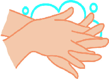
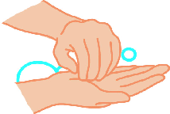

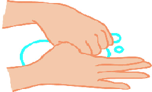
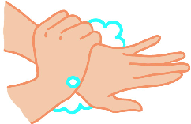
1.石鹸を泡立てよくこする
2.手の甲のしわを伸ばすようにこする
4.指をクロスさせ指の間を十分に洗う
5.親指と手掌をねじり洗い
6.手首を忘れず洗う
3.手掌に石鹸を泡立て指先爪の間を洗う
図１．石鹸と流水での手の洗い方
手指衛生の方法
石鹸と流水による手洗い
【手順】
①水で手を濡らす
②十分量の石鹸を取りしっかり泡立てる（ポンプをしっかり下まで押す）
③6ステップに従って、擦る（図１参照）
・手掌を擦る
・手の甲のしわを伸ばすように擦る
・手掌で指先・爪の間を擦る
・指をクロスさせ指の間を洗う
・親指を捻り洗いする
・手首を洗う
④石鹸成分を十分に流水で洗い流す（30秒～60秒）
⑤水道栓は肘を使い手指を使用せず閉める
無理な場合は手を拭いたペーパータオルで閉め、直接カランを触らない
⑥ペーパータオルで手指を十分に拭く
手指を完全に乾かすことで手荒れ防止につながる
⑦ゴミ箱に手が触れないようにペーパータオルを廃棄する
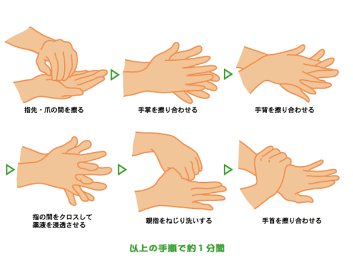
アルコール性手指消毒剤での手指衛生
【手順】
① 十分量の消毒剤をとる（ポンプ剤は、上から下までを押すと１回量が出る）
② 6ステップを以下に従って、完全に消毒剤が乾燥するまで擦る（図２参照）
・手掌の消毒剤で反対の指先・爪の間を擦り、残りで反対側も同様に行う
・手掌を擦り合わせる
・手背を擦り合わせる
・指をクロスさせ指の間を擦る
・親指を捻り洗いする
・手首を擦る
図２．速乾性手指消毒剤の使用方法
- 手指衛生が必要な場面
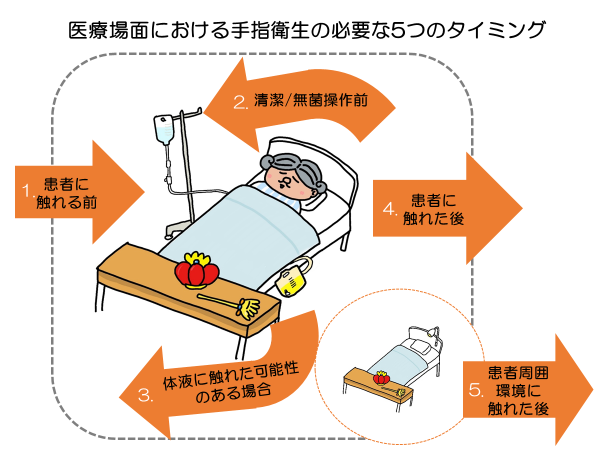
以下の５つの場面で手指衛生を行う- 手荒れ予防のための対策
- 石鹸の洗い残しをしないようにしっかり流水ですすぐ。
- 手指衛生後の手は濡れたままで放置しない。
- ペーパータオルは強く擦らず、水分を吸収させるように優しく拭き取る。
- 日ごろからローションやハンドクリーム等でハンドケアを行う。
- 手荒れ時の対応
- 手荒れがひどく手指衛生が適切に実施できない場合は、手袋の頻回な交換で対応する。
- アルコール性手指消毒剤が使用できない場合に限り、非アルコール性手指消毒剤を携帯使用する。
- ハンドケアでも改善しない手荒れは、皮膚科受診（当院では、「職員専用手荒れ外来」で受診可能）を行う。
- シンクの管理 （図３.参照）
- 原則として、器材洗浄は病棟で行わない。
- 手洗い用シンクと器材洗浄用シンクは分ける。
- 手洗いシンクは手洗い以外の廃液を流さず、シンク周囲に手洗いに必要な物品以外置かない。
- 手洗いシンクには液体石鹸、ペーパータオルを設置し、手洗い手順ポスターを掲示する。
- シンクの水はねを拭き取り、清潔に保つ。
- 長期に使用していない水栓は、定期的（1－2週間に1回程度）に水を流すかシンクの撤去を検討する。
- 適切な個人防護具の使用
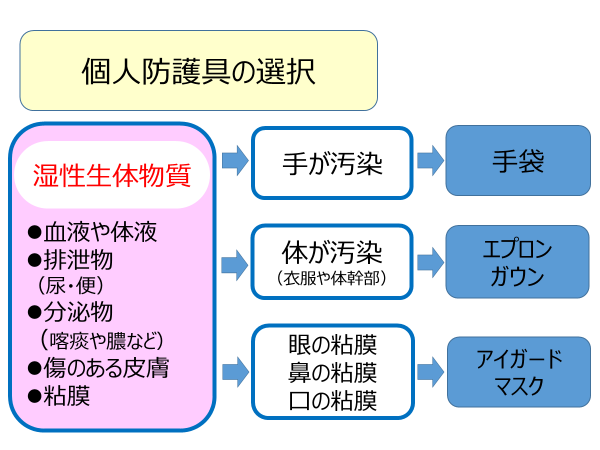
血液・体液など湿性生体物質に接触する可能性のあるときは個人防護具（手袋、マスク、エプロン・ガウンアイガードなど）を着用する。使用後の個人防護具は汚染面を素手で触れないように注意しながら直ちに脱ぎ、手指衛生を行う。
使用した個人防護具は廃棄物の分別に従って正しく廃棄する。
- 手袋
- 手袋が必要な場面
- 手袋
・血液、体液、分泌物、汚染物、粘膜、損傷のある皮膚に接触する可能性がある時
・ガーゼ交換などで汚染ガーゼを除去する時
・鋭利な器材を扱う時
・汚染器材を取り扱う時
・手に傷がある時
- 手袋使用時の注意点
・処置や業務に応じた適切な手袋を選択する。
・病原体が高濃度に存在する部分に接触した場合は、同一患者でも、処置ごとに手袋を交換する。
・再使用のために手袋を洗うことは行ってはならない。
・使用前後は、必ず手指衛生を行う。
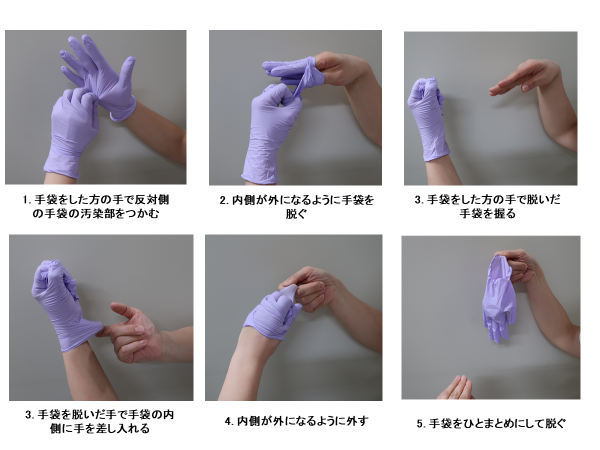
・手袋をはずすときには、汚染表面を素手で触れないように注意する（図４参照）。図4. 手袋の脱ぎ方
最後に、
手指衛生
- サージカルマスク
- マスク使用の目的
- サージカルマスク
- 飛沫を遮蔽する。
- 血液、体液などの分泌物が飛散し、飛沫が発生するおそれがある処置やケアを行う場合、鼻や口の粘膜を保護するために着用する。
例）外科手術時、中心静脈ライン挿入時などの侵襲処置時など
- 職員自身が咳・くしゃみ・鼻汁等の呼吸器症状を有する場合、マスクを着用する。
- マスク使用時の注意
- マスク使用時はできる限り顔へのフィット性を高める。
- 口と鼻を十分覆う。
- 着用後は呼気のかかるマスク部分や汚染の可能性がある部分には素手で触れないようにする。また取りはずす際にも触れない。
- ユニバーサルマスクの適応基準
- 市中で呼吸器病原体などによる感染症の流行期
- 各部署内での呼吸器病原体などによる院内伝播が疑われた際
- エプロン・ガウン
- 血液、体液などの分泌物が飛散し、飛沫が発生するおそれがある処置やケアを行う場合、皮膚と着衣を保護するために着用する。
- ガウンまたはエプロンは撥水性あるいは防水性のものでなければ、血液、体液が着衣へ浸透し、防護効果が得られない。ガウンやエプロンを脱ぐときは汚染面に触れないようにし、汚染面を内側にして脱ぐ（図５参照）。
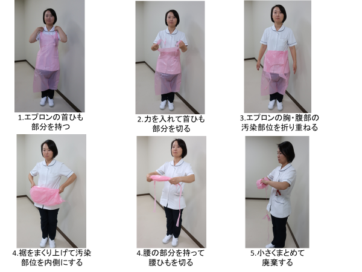
図5. エプロンの脱ぎ方
最後に、
手指衛生
- フェイスシールド・ゴーグル
血液、体液等が飛散し、飛沫が発生するおそれがある処置やケアを行う場合、目、鼻、口の粘膜を保護するために、マスクとアイプロテクション（ゴーグル）またはフェイスシールドを使用する。
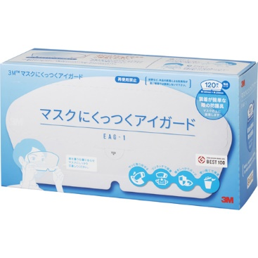
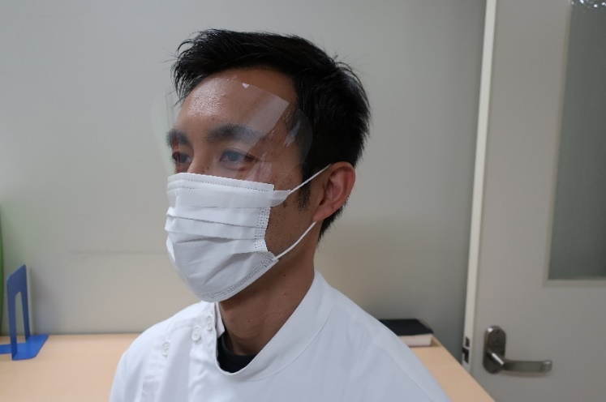
例）口腔ケア、開放式吸引、侵襲的処置などアイシールド
3M® マスクにくっつくアイガード
- キャップ
- 頭髪が清潔野に落下したり、頭髪が汚染するのを防ぐために使用する。
- 血液、体液に曝露するのを予防する。
- 呼吸器衛生（咳エチケット）
- 咳やくしゃみをする時にはティッシュで口と鼻を覆い、最寄りのゴミ箱に廃棄する。
- 咳やくしゃみの後は手指衛生を行う。
- ティッシュ、ノンタッチ式のゴミ箱を設置し、咳エチケットのポスターを掲示する。
- 咳をしている人はサージカルマスクを装着する。または、マスクをするように促す。
- 適切な患者の配置
- 他者への伝播のリスクをもたらす患者（排便・尿失禁患者、認知障害患者など周囲環境を汚染する危険性の高い患者、あるいは衛生管理に協力できない患者）は個室に収容する。
- 周囲環境対策
- ケアに使用した器具の取り扱い
- 周囲環境対策
- 血液、体液等湿性生体物質で汚染した器具は、自身の皮膚、衣服、他の患者、環境に接触しないように運び、取り扱う。
- 血液、体液など湿性生体物質で汚染した器具を取り扱う際は個人防護具を装着する。
- 使い捨ての物品は適切に廃棄する。
- 再使用可能な器材は、使用用途に応じ洗浄、消毒あるいは滅菌処理を確実に実施する。
⇒洗浄・消毒・滅菌の項参照
- 食器
全ての使用後の食器は熱水消毒が行われているため、各病棟での処理は不要である。
- 患者周囲環境
- 日常清掃
- 患者周囲環境
- 患者周囲の環境表面等の清掃の方針と手順を確立し、実践されていることを確認する。
- 使用回数の多い電子機器は清掃・消毒方法を手順に含める。
- 環境表面を接触頻度に従って日常的に清掃・消毒する。特に、高頻度接触面（ドアノブ、ベッド柵、電気のスイッチなど）は、最低１回/日、環境清拭を行う。
- 院内の環境表面は血液や喀痰等の特別な汚染がない限り消毒は不要である。
- 床などに付着した血液・喀痰等は、手袋を着用しペーパータオルで拭き取る。必要であればその部位を0.1％次亜塩素酸ナトリウムで清拭消毒する。
⇒G.院内環境委整備 Ⅰ.院内清掃の項参照
- カーテン
- 血液・体液等湿性生体物質で汚染した場合や、退院時には、交換する。
- 血液・体液等湿性生体物質で汚染した場合は、取り外したカーテンは白いビニール袋に入れる。
⇒依頼方法は、看護管理マニュアル参照
- 病院リネン
使用後のリネンのうち、血液・体液・排泄物によって汚染されたリネンを「感染性リネン」、感染症法に定める感染症分類の一類から四類感染症および指定感染症の患者に使用したリネンを「感染症法分類に含まれる感染性リネン」とする。
- 感染性リネン
- 血液・体液・排泄物によって汚染されたリネン。
- 結核及び薬剤耐性菌感染症、インフルエンザ、新型コロナウイルス感染症等の五類感染症感染防止のため、個室に隔離している患者に使用したリネン。
＜処理方法＞
- 明らかに汚染の強い時は可燃性感染性廃棄物で廃棄する。
- 少量の汚染の場合、白の半透明ビニール袋に入れ、ランドリーカートに入れる。
- 回収されたリネン類は、業者が熱水洗濯機を使用して80℃10分間以上または次亜塩素酸による消毒を行う。
＜注意事項＞
- 寝衣とリネンは分けて別々の袋に入れる。
- 皮膚との接触、衣服の汚染、他の患者や環境への汚染を予防するため、白の半透明のビニール袋は、しっかり口を結び、汚染リネンを密封する。
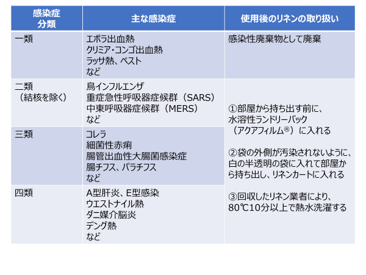
感染症法分類に含まれる感染性リネン
下記の表に示す通り、適切に処理する。
- 廃棄物
- 血液・体液の付着したごみは感染性廃棄物に捨てる。
- 接触感染対策が必要な感染症患者に使用した個人防護具は感染性廃棄物として廃棄する。
- 患者の出した生活ごみは一般廃棄物に捨てる。
⇒Ｇ-Ⅱ廃棄物の項参照
- 安全な注射処理
- 無菌操作を適用する。注射針および注射器は単回使用とする。
- 点滴バック、チューブ、コネクターは一人の患者のみに使用する。
- 単回量バイアル製剤の使用を基本とする。複数回量バイアルを用いる場合は滅菌された針および注射器でアクセスし、無菌状態が損なわれた場合は廃棄する。
- 静脈注射の溶液バッグまたはボトルを複数患者への共通の供給源として使用しない。
- 腰椎穿刺処置時の感染制御
骨髄造影、腰椎穿刺、脊椎麻酔および硬膜外麻酔の際はサージカルマスクを着用する。
- 血液媒介病原体対策
- 鋭利な器具の取り扱い
- 血液媒介病原体対策
- 針やメスなどの鋭利な器具は負傷を避けるように取り扱う。
- リキャップをしない。
- 使い捨ての注射器から手で針を抜いたり、曲げたり、折ったりしない。
- 使い捨ての針付き注射器、注射針、刃などは、使用現場にできるだけ近い場所に置いた耐貫通性の専用廃棄容器に廃棄する。
- 手術室では「ハンズフリー法」（中間ゾーンを設ける）により鋭利器材の直接手渡しを制限したり、盲目的な操作を避け、声をかけあったり、視覚的な確認操作を加えることで互いの安全に留意する。
＊鋭利器材による刺傷、切創や血液・体液の曝露時は、必ず報告書を提出する
⇒Ｃ-Ⅱ職業上曝露発生時の対応の項参照
- 救急蘇生・人工呼吸
- 救急蘇生における処置介助の際は、血液などの飛散や患者の分泌物に接するリスクが高く、適切な個人防護具の使用を積極的に行う。
- 容態急変の可能性のある患者のベッドサイドにはアンビューバッグの準備を行う。